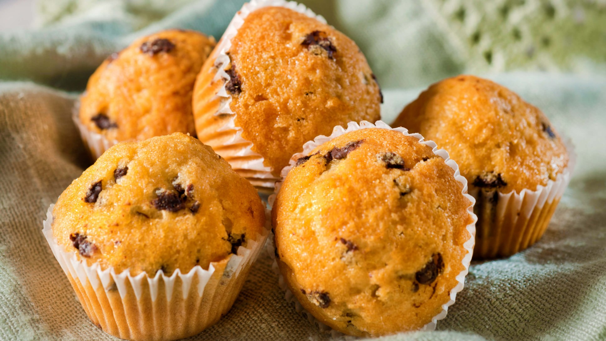

Muffin
Home

Description
A muffin is a small, individual quick bread, baked in cup-shaped pans,
known for its moist, dense, crumbly texture and typically sweet flavor,
though savory versions exist. They're leavened with baking powder/soda, unlike yeast-risen breads,
often feature mix-ins like berries or chocolate chips, and differ from cupcakes by having a less-beaten batter,
coarser texture, and generally no icing, serving as versatile breakfast, snack, or dessert items.
Ingredients
- 2 medium eggs.
- 125ml vegetable oil.
- 250ml semi-skimmed milk.
- 250g golden caster sugar.
- 400g self-raising flour. (or same quantity plain flour and 3 tsp baking powder)
- 1 tsp salt.
- 100g chocolate chips. or dried fruit such as sultanas or dried cherries (optional)
Steps
- Preheat your oven to 375°F (190°C).
- In a large bowl, whisk together flour, sugar, baking powder, and salt.
- In another bowl, mix milk, vegetable oil, and an egg.
- Pour the wet ingredients into the dry ingredients.
- Stir gently until just combined (do not overmix!).
- Fold in chocolate chips or blueberries if desired.
- Spoon the batter into a greased muffin tin.
- Bake for 20-25 minutes until golden brown.